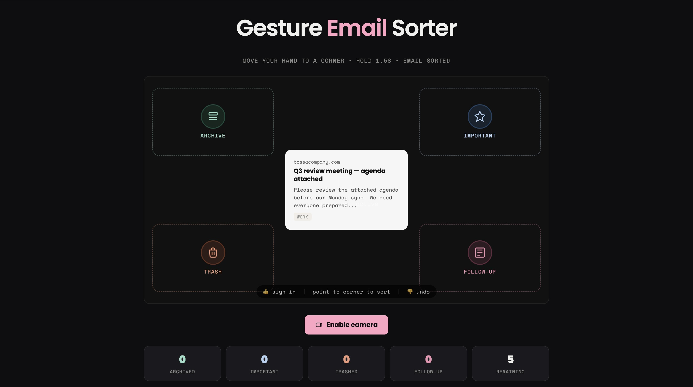

Sort your accumulated piles of email using simple hand gestures detected by your webcam — a fun, alternative interface for tackling inbox overload 💌
Gesture Email Sorter is a web app that replaces click-and-drag email management with hand gesture controls. Your webcam feeds into a Mediapipe hand tracking model running in a Python backend, which maps recognized gestures to actions — swipe left to archive, swipe right to keep, pinch to mark important
The React frontend displays emails one at a time and animates them based on the detected gesture, giving real-time visual feedback before the action is committed. It was deployed on Railway with the Python backend serving the gesture detection via WebSocket.
The idea came from a frustration with the monotony of email triage — clicking the same actions hundreds of times is numbing. I also like building creative tech projects between now and then and was intrested in MediaPipe projects
Mediapipe processes each webcam frame and extracts 21 hand landmarks in real time. Custom gesture classifiers built on top of the landmark coordinates recognize swipe direction, pinch, and fist gestures with low false-positive rates.
Each gesture maps to an email action: swipe right to keep in inbox, swipe left to archive, thumbs up to mark as important, closed fist to delete. The mapping is designed to feel intuitive — actions that feel like they make sense for the gesture.
The email card animates in the direction of the detected gesture before the action commits, giving users a chance to see what's about to happen. This prevents accidental sorting from ambiguous gestures and makes the experience feel responsive and satisfying.
Mediapipe's accuracy varies significantly with lighting conditions and background complexity. In poor lighting, landmark detection becomes unreliable enough to cause false positives. Adding a confidence threshold filter before dispatching any action reduced accidental triggers substantially, but it also made the system feel slightly less responsive.
The WebSocket latency between gesture detection in the Python backend and the React animation also required careful handling — if a frame drop caused a brief gap in landmark data, the frontend needed to smoothly handle the absence of a gesture signal without freezing.
Building a computer vision application for a real user-facing product is humbling. In a controlled demo environment, gesture detection feels magical. In a real office with mixed lighting and background clutter, it needs significantly more robustness work. Edge cases in CV are pervasive and hard to anticipate.
The WebSocket architecture also taught me a lot about real-time data flow between a Python backend and a React frontend — a pattern I've reused since for other projects involving live data streams.